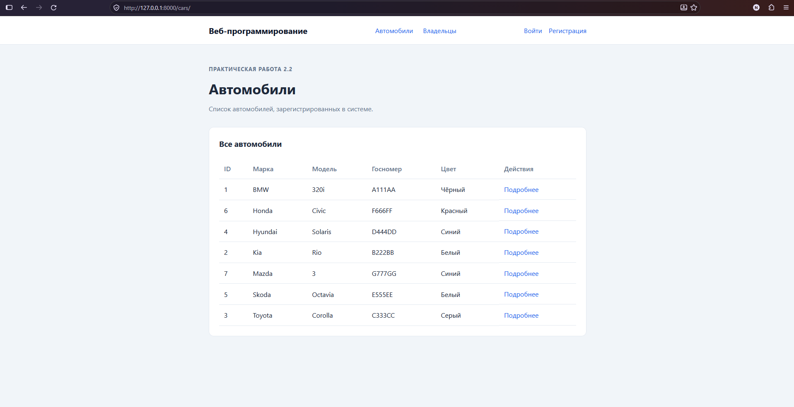
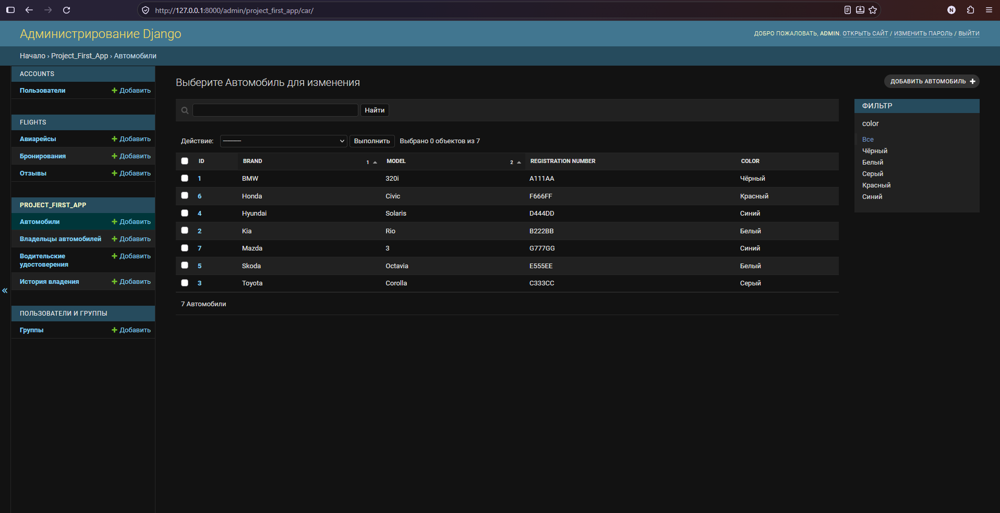
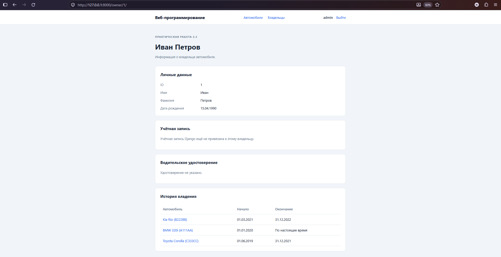
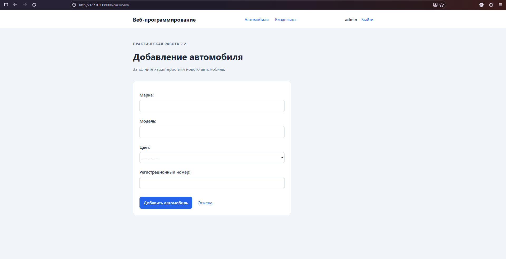
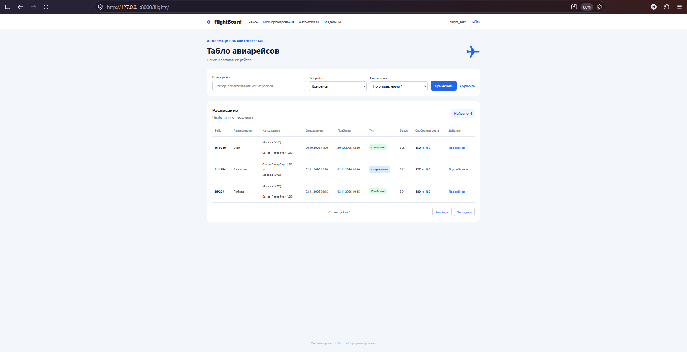
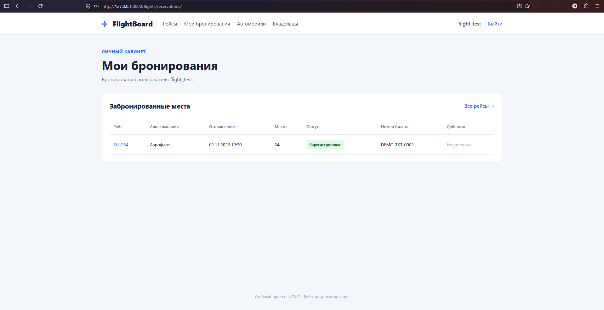
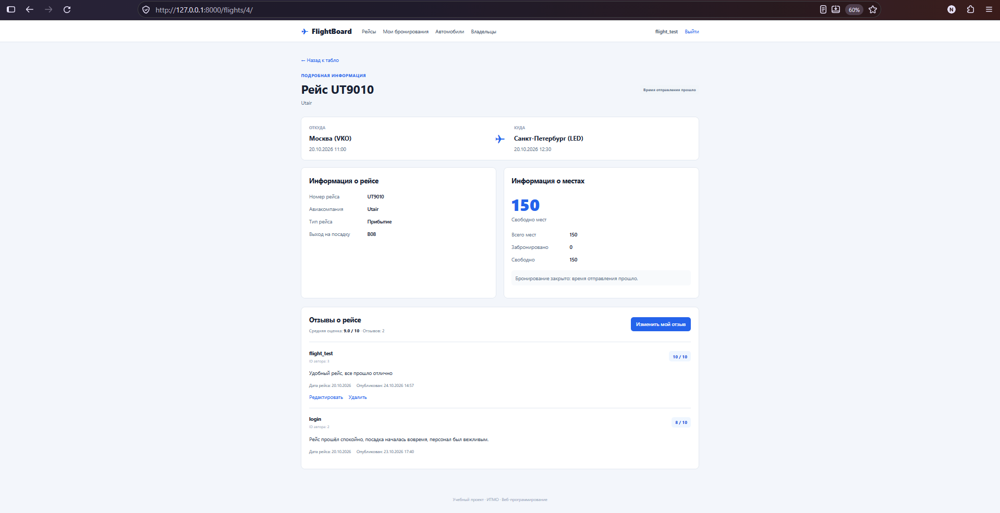
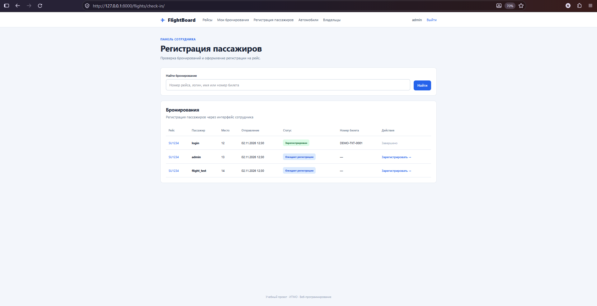
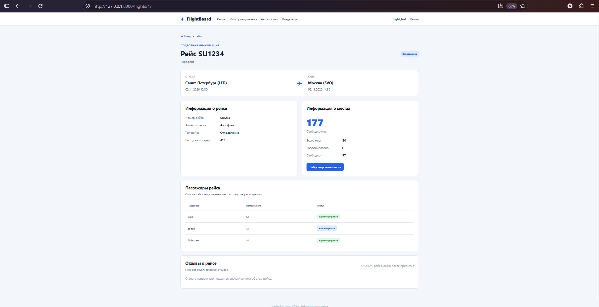
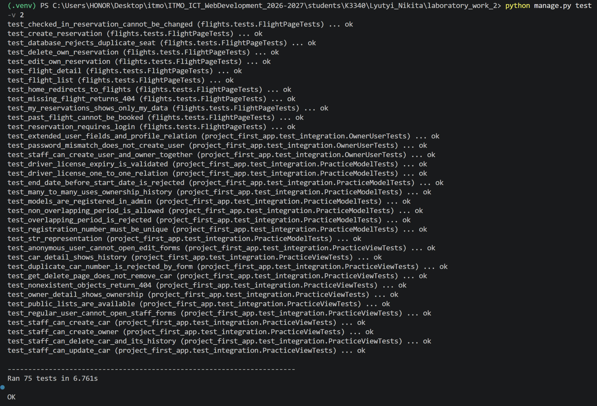

Лабораторная работа №2. Разработка веб-приложения на Django
Дисциплина: Веб-программирование
Студент: Лютый Никита
Группа: K3340
Вариант: №3 — Табло авиаперелётов
1. Цель и постановка задачи
Изучить возможности Django 3, работу с PostgreSQL через ORM, модели данных и связи между ними, Django Admin, формы, маршрутизацию, функциональные и классовые представления, авторизацию и создание пользовательского интерфейса.
Работа состоит из практических заданий 2.1–2.3 и индивидуального варианта №3. Практическая часть посвящена автомобилям и владельцам, индивидуальная — информационной системе авиаперелётов.
Используемые технологии: Python 3.10.11, Django 3.2.25, PostgreSQL 16, Docker Compose, Jinja2 3.1.6, HTML5 и CSS3.
2. Архитектура приложения
Приложение разработано по архитектуре MVT (Model–View–Template):
- Model: модели ORM описывают сущности и ограничения базы данных.
- View: FBV/CBV принимают запросы, работают с ORM и формируют контекст.
- Template: HTML-шаблоны Django и Jinja2 отображают данные.
В проект входят три Django-приложения:
| Приложение | Назначение |
|---|---|
project_first_app |
Владельцы, автомобили, водительские удостоверения, история владения |
accounts |
Пользователь AbstractUser, регистрация, вход/выход |
flights |
Рейсы, бронирования, отзывы и регистрация пассажиров |
Конфигурация проекта — django_project_lyutyi. Данные хранятся в PostgreSQL; параметры подключения задаются через .env.
3. Практическая работа 2.1 — модели и администрирование
Созданы модели:
| Модель | Основные поля и связи |
|---|---|
CarOwner |
Имя, фамилия, дата рождения |
Car |
Марка, модель, цвет, уникальный госномер |
DriverLicense |
Номер, дата выдачи, срок действия; OneToOne с владельцем |
Ownership |
Автомобиль, владелец, дата начала и окончания владения |
Связь автомобиля и владельца реализована как Many-to-Many через Ownership. Это позволяет одному человеку владеть несколькими машинами, а одной машине — иметь разных владельцев в различные периоды. Валидация предотвращает некорректные даты и пересечения периодов владения одним автомобилем.
Модели зарегистрированы в Django Admin; настроены списки, фильтры и формы редактирования. Сформированы демонстрационные данные с несколькими владельцами, автомобилями и периодами владения. Создана публичная страница владельца по его ID.

Рисунок 1 — список автомобилей.

Рисунок 2 — управление историей владения в Django Admin.
4. Практическая работа 2.2 — формы и CRUD
Реализованы функциональные представления (FBV) для списка, карточки и создания владельцев, а также классовые представления (CBV) для автомобилей: список, карточка, создание, изменение и удаление.
HTML-формы используют серверную валидацию. Перед удалением автомобиля выводится страница подтверждения. Операции изменения данных защищены проверками прав доступа.

Рисунок 3 — карточка владельца и связанные автомобили.

Рисунок 4 — форма создания автомобиля.
5. Практическая работа 2.3 — расширение User
Для работы с пользователями создана модель accounts.User на основе AbstractUser. Добавлены поля номера паспорта, домашнего адреса и национальности. Пользователь может быть связан с профилем CarOwner через OneToOneField.
Реализована форма создания пользовательской записи со связанным владельцем, предусмотрена проверка совпадения паролей. Наличие расширенных полей и корректность создания профиля проверяются автоматическими тестами.
6. Индивидуальный вариант №3 — FlightBoard
6.1. Модели
Flight— номер и тип рейса, авиакомпания, аэропорты и время отправления/прибытия, выход на посадку, вместимость.Reservation— пользователь, рейс, место, статус регистрации, номер билета.Review— рейс, автор, дата рейса, текст и оценка от 1 до 10.
На уровне базы данных заданы ограничения: уникальность места в одном рейсе, уникальность номера билета, один отзыв автора на конкретный рейс, допустимый диапазон оценок и положительная вместимость.
6.2. Табло, поиск и пагинация
На странице /flights/ отображаются прибытия и отправления. Реализован поиск по номеру рейса, авиакомпании, аэропорту отправления или назначения, фильтр по типу, сортировка и пагинация. Количество свободных мест рассчитывается на основе бронирований через ORM annotate().

Рисунок 5 — табло рейсов с поиском, фильтрами и пагинацией.
6.3. Бронирование мест
После входа пользователь выбирает свободное место и создаёт бронь. В личном кабинете можно изменить место или отменить бронь, пока рейс не отправился и пассажир не зарегистрирован. Занять одно место дважды нельзя: ограничения проверяются в форме и PostgreSQL. Для связанных изменений применяются транзакции.

Рисунок 6 — личный кабинет пользователя.
6.4. Отзывы об авиарейсах
Отзыв можно опубликовать после прибытия рейса. Пользователь указывает текст и оценку 1–10, может редактировать и удалять только свой отзыв. На странице рейса выводятся отзывы и средняя оценка, вычисленная через Avg(). Повторное создание отзыва тем же автором ограничено базой данных.

Рисунок 7 — отзывы об авиарейсе и средняя оценка.
6.5. Регистрация пассажиров сотрудником
Сотрудник с is_staff=True получает доступ к /flights/check-in/. Он находит бронирование по логину, рейсу или номеру билета, назначает билет и переводит бронь в статус «Зарегистрирован». Изменение статуса и номера билета выполняется совместно в транзакции.
Обычному пользователю служебный интерфейс недоступен. Публичный список пассажиров на странице рейса показывает место и статус, но не номер билета. После регистрации пассажир не может самостоятельно изменить или отменить бронь.

Рисунок 8 — панель регистрации пассажиров.

Рисунок 9 — открытая информация о пассажирах и статусах регистрации.
6.6. Адаптивная вёрстка
Сайт использует HTML5 и CSS3: карточки, таблицы, формы, фильтры и мобильную навигацию. На узких экранах формы размещаются вертикально, а таблицы прокручиваются горизонтально.
Рисунок 10 — мобильное отображение интерфейса.
7. Тестирование
Тесты написаны на django.test.TestCase и используют отдельную тестовую PostgreSQL-базу. Проверены модели и ограничения, формы, маршруты, права доступа, создание/изменение/удаление записей и корректность поиска.
| Набор проверок | Количество |
|---|---|
Регистрация и авторизация (accounts) |
4 |
Авиарейсы и бронирование (flights.tests) |
15 |
Отзывы (flights.test_reviews) |
10 |
Регистрация пассажиров (flights.test_checkin) |
11 |
Поиск и пагинация (flights.test_listing) |
11 |
Практики 2.1–2.3 (project_first_app.test_integration) |
24 |
| Всего | 75 |
python manage.py check
python manage.py makemigrations --check --dry-run
python manage.py test -v 2
Результат 24 октября 2026 года: Ran 75 tests in 6.761s, OK; Django System Check — 0 ошибок; изменений моделей, требующих миграции, нет.

Рисунок 11 — успешный полный прогон тестов.
8. Выводы
В лабораторной работе освоены компоненты архитектуры MVT, Django ORM, формы, FBV/CBV, Django Admin, авторизация и работа с PostgreSQL. Реализованы практические задания 2.1–2.3 и веб-приложение по варианту №3. Настроены проверки целостности данных, прав доступа и автоматическое тестирование. Полный прогон 75 тестов завершился успешно.
Исходный код и инструкция запуска находятся в каталоге students/K3340/Lyutyi_Nikita/laboratory_work_2/README.md.